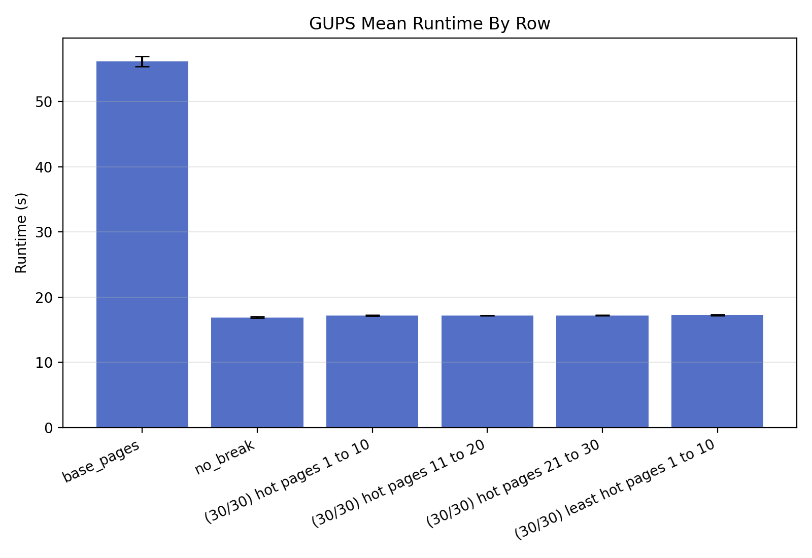
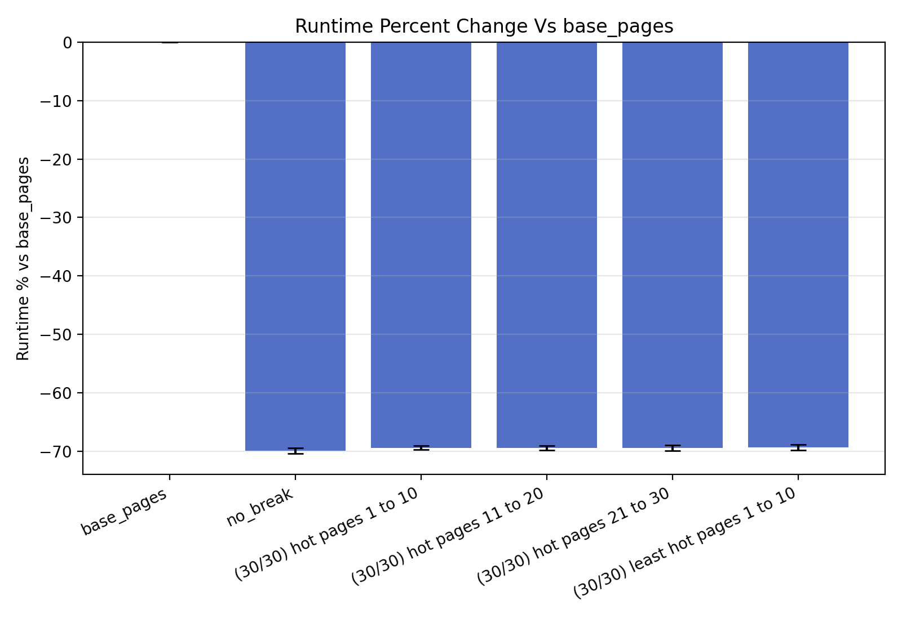
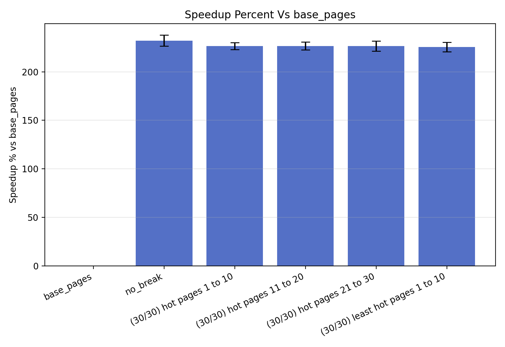
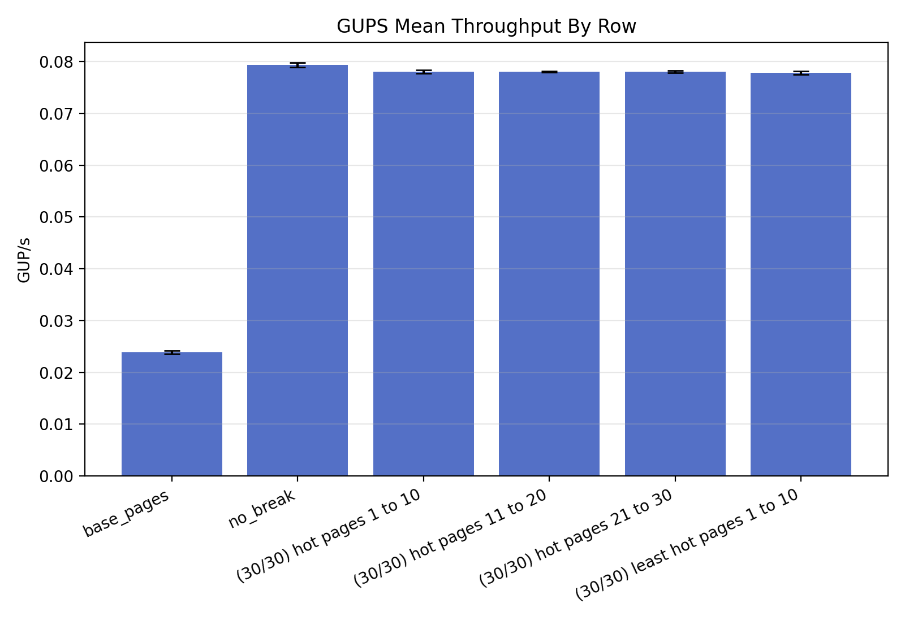

base_pages means THP never with no page breaks.no_break means THP always with no page breaks.base_pages.100 * ((runtime_s_i / base_pages_runtime_s_i) - 1)100 * ((base_pages_runtime_s_i / runtime_s_i) - 1)



No successful multi-page split rows found.
| Row | Runtime | Runtime % vs base_pages | Speedup % vs base_pages | GUP/s | dTLB loads | dTLB misses | Split successes | Expected successes | Max split attempts |
|---|---|---|---|---|---|---|---|---|---|
| base_pages | 56.160461 +/- 0.752990 | 0.000 +/- 0.000 | 0.000 +/- 0.000 | 0.023902 +/- 0.000322 | 0 | 0 | 0 | ||
| no_break | 16.906239 +/- 0.086836 | -69.892 +/- 0.510 | 232.203 +/- 5.632 | 0.079391 +/- 0.000409 | 0 | 0 | 0 | ||
| (30/30) hot pages 1 to 10 | 17.199722 +/- 0.073450 | -69.371 +/- 0.348 | 226.516 +/- 3.689 | 0.078036 +/- 0.000333 | 30 | 30 | 1 | ||
| (30/30) hot pages 11 to 20 | 17.192213 +/- 0.019411 | -69.384 +/- 0.380 | 226.659 +/- 4.032 | 0.078069 +/- 0.000088 | 30 | 30 | 1 | ||
| (30/30) hot pages 21 to 30 | 17.199321 +/- 0.046973 | -69.370 +/- 0.490 | 226.536 +/- 5.200 | 0.078037 +/- 0.000213 | 30 | 30 | 1 | ||
| (30/30) least hot pages 1 to 10 | 17.246685 +/- 0.072201 | -69.286 +/- 0.460 | 225.637 +/- 4.886 | 0.077823 +/- 0.000326 | 30 | 30 | 1 |